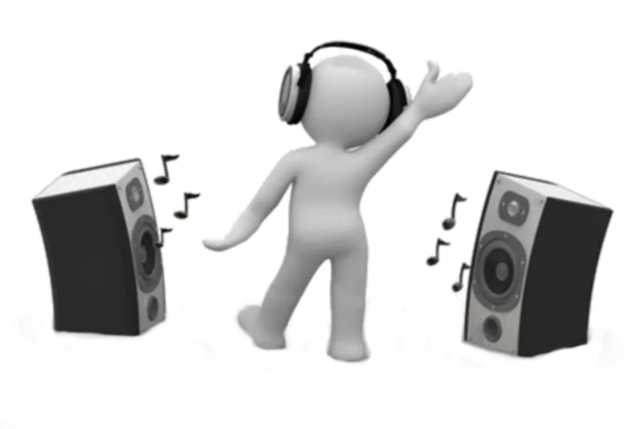
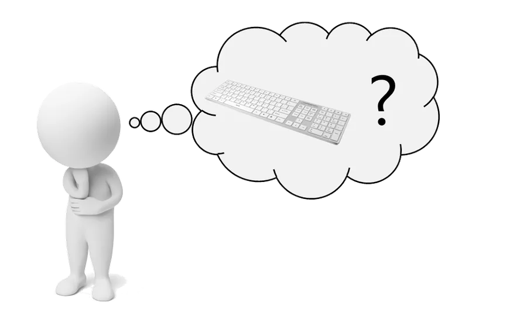

Sobre o Projeto
O que é?
Desenvolvido pelos alunos José Felipe Rodrigues Serpa, Lucas Pedreira da Silveira e Pietro de Almeida Lopes no Instituto Federal Sul-rio-grandense Campus Charqueadas, o Guia Braille é um ambiente que possibilita que você aprenda o Braille de forma fácil, interativa e estimulante. Esta ferramenta é voltada principalmente para deficientes visuais, porém pode ser usada por toda e qualquer pessoa que tenha interesse pelo assunto.
Como funciona?
As informações presentes no site são transmitidas através de áudios e textos, possibilitando que você use o método que mais lhe convém. Para o estudo do Braille, em primeiro momento, o site apresenta os principais conceitos da simbologia. Em um segundo momento, você é levado a desempenhar atividades interativas, que são jogos de ensino de Braille.

Como navegar pelo site sem o auxílio do mouse?
É muito simples! Basta pressionar a tecla “Tab” do seu teclado para alternar entre os elementos. A cada elemento selecionado, um áudio é emitido para lhe auxiliar. Pressione “Tab” e experimente agora mesmo!
Para usar o sistema, um teclado adaptado para o Braille
Os jogos interativos funcionam melhor com um teclado adaptado para o Braille. Você não precisa gastar muito: o Guia Braille ensina como fazer o seu próprio teclado.
Sem teclado adaptado, ou no celular, você pode usar o teclado Braille de 6 pontos que aparece na tela dos jogos.
